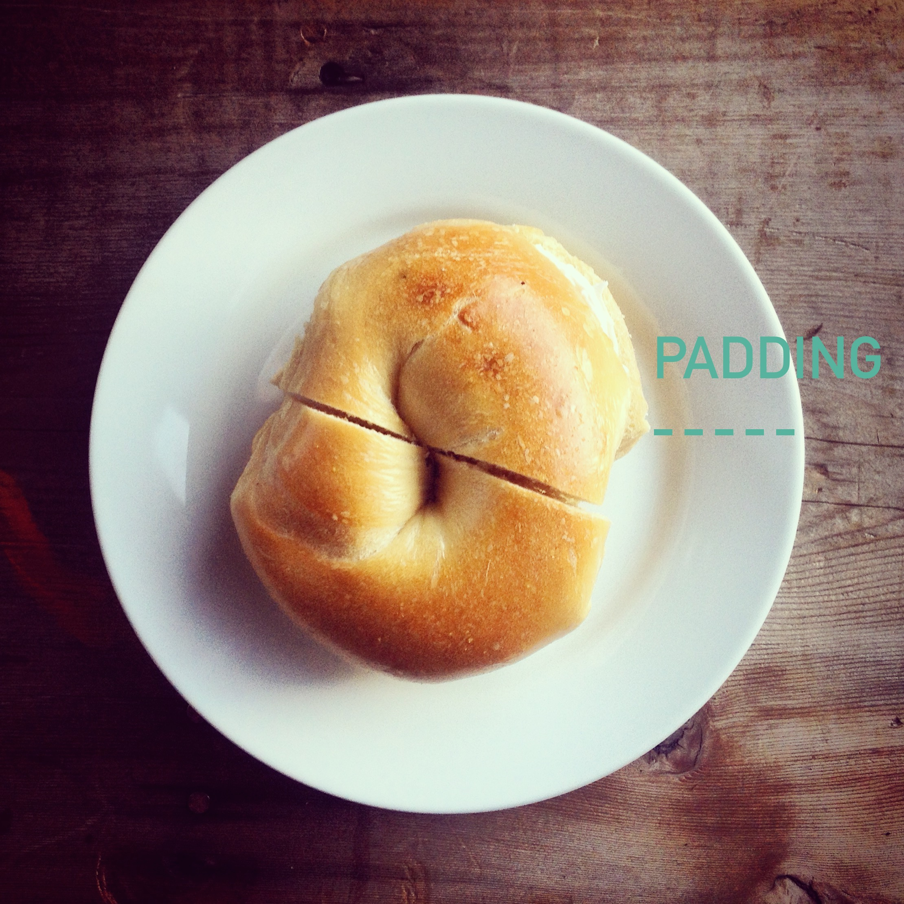
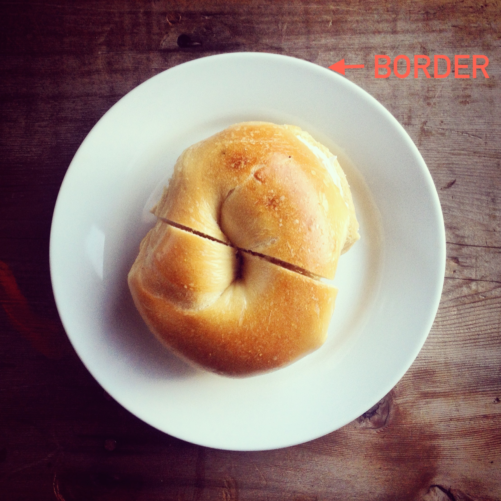
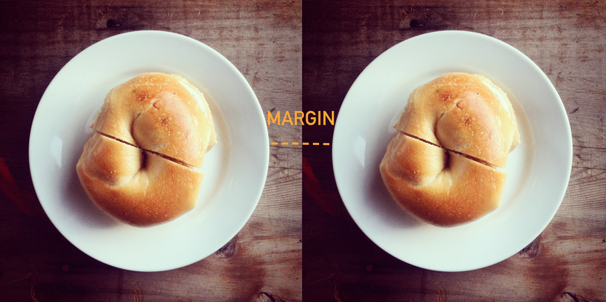

"Art is like a border of flowers along the course of civilization."
-Lincoln Steffens
Let's say you've got some content worthy of a place to call its own.
Before we glam up with stylesheet condiments, we've got to start with the basics. That's the HTML-hand-crafted, artisinal, fresh-out-the oven goodness in the middle.
Then, we can use CSS to add some padding to our content.
Padding is the space between our element border and the element content. Here, it's the plate serving as extra space holding our bagel-content in its luxurous ceramic arms.
We've also got a lil' border, the space between the edge of the plate (the edge of the padding) and the world beyond our element.
lastly, we've got our margin. We're talking the space around elements. It's completely transparent - just a little bit of breathing room for your precious material.
That's a little bit about margin, border, and padding properties! Don't hesitate to give your stuff all the love, clearance and artsy sparkle you see fit.